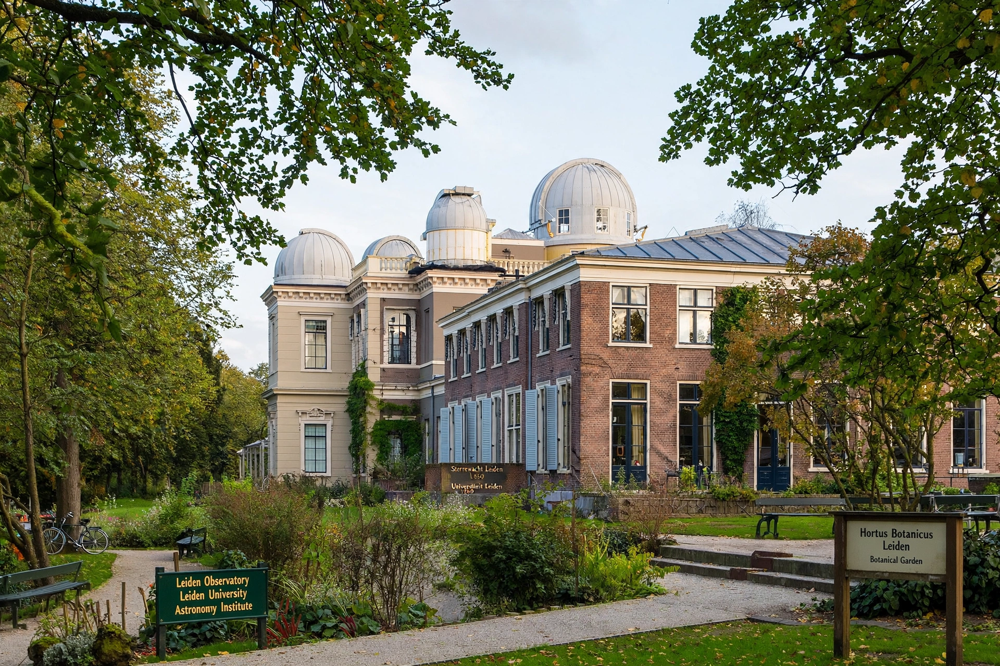

Leiden Observatory (Dutch: Sterrewacht Leiden) is an astronomical institute of Leiden University in the Netherlands. Established in 1633, it is one of the oldest university observatories in the world.

| Leiden Observatory | |
|---|---|
| Established | 1633 |
| Location | Leiden, Netherlands |
| Parent | Leiden University |
Founded at the university's academy building, the observatory moved in 1861 to a purpose-built site, now the Old Observatory in the botanical garden, and in the 1970s to the Leiden Bio Science Park campus. Directors and researchers have included Frederik Kaiser, Jacobus Kapteyn, Willem de Sitter, Jan Oort and Hendrik van de Hulst, who predicted the 21-cm hydrogen line.
Today it is among Europe's largest astronomy institutes, working on cosmology, galaxy formation, exoplanets and instrumentation for ESO and space missions. See Leiden University and Jan Oort.